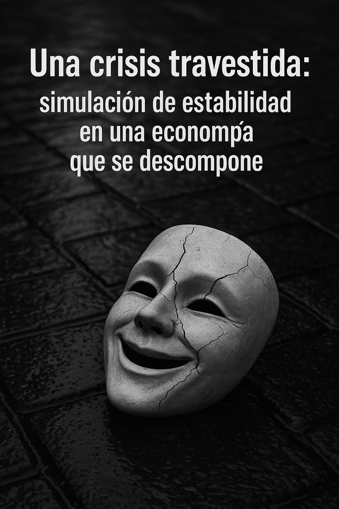

Trilogía · Artículo I
Simulación de estabilidad en una economía que se descompone

Durante décadas, supimos reconocer una crisis económica por sus síntomas evidentes: desplomes bursátiles, quiebras bancarias, recesiones en cadena, protestas sociales. Las crisis tenían forma, tiempo y narrativa. Pero ¿y si el modelo tradicional ha cambiado? ¿Y si la crisis ya no se manifiesta en forma de colapso repentino, sino como un deterioro silencioso, camuflado bajo una apariencia de estabilidad?
En este artículo propongo una hipótesis inquietante: estamos viviendo una crisis económica real, estructural, profunda, pero travestida. Su disfraz es la normalidad. Su invisibilidad nace del exceso de información y de la obsolescencia de nuestras métricas tradicionales.
Desde 2022, muchos analistas —con datos en la mano— han venido advirtiendo del riesgo de una recesión global. Inversión de la curva de tipos, desaceleración de la productividad, deterioro del sentimiento empresarial, tensiones geopolíticas… Todo apuntaba a una desaceleración inminente. Pero no ha llegado. O al menos, no como la esperábamos.
El PIB ha seguido creciendo, aunque impulsado por gasto público y deuda. El empleo se ha mantenido firme, aunque con más subempleo y precariedad. La inflación ha bajado nominalmente, pero los precios siguen ahogando a las clases medias. Los mercados bursátiles continúan en máximos, aunque sostenidos por narrativas y expectativas, no por fundamentos productivos.
Todo parece indicar que el ciclo económico ha sido anestesiado. ¿Por qué?
Podríamos decir que la economía actual ha dejado de representar la realidad material y se ha convertido en un sistema de signos, titulares y expectativas sin conexión con el día a día de la población. Ya no importa tanto la realidad económica como la narrativa que consigue mantenerla en pie. Lo que se gestiona no es el bienestar, sino la percepción de estabilidad.
Vivimos en una economía dopada por estímulos monetarios, intervenida por bancos centrales, mediatizada por algoritmos de contenido y sostenida por expectativas más que por estructuras.
En ese entorno:
No se trata de alarmismo, sino de cambiar el ángulo del análisis.
Lo que vivimos no es ausencia de crisis, sino mutación en su forma de manifestarse. En vez de recesiones que arrasan, tenemos procesos degenerativos que se infiltran en lo cotidiano. En lugar de pánico en los mercados, hay indiferencia en las calles. No estalla el sistema, se disuelve su capacidad de generar bienestar real.
La narrativa del "todo va bien" es una máscara sonriente. Pero está agrietada.